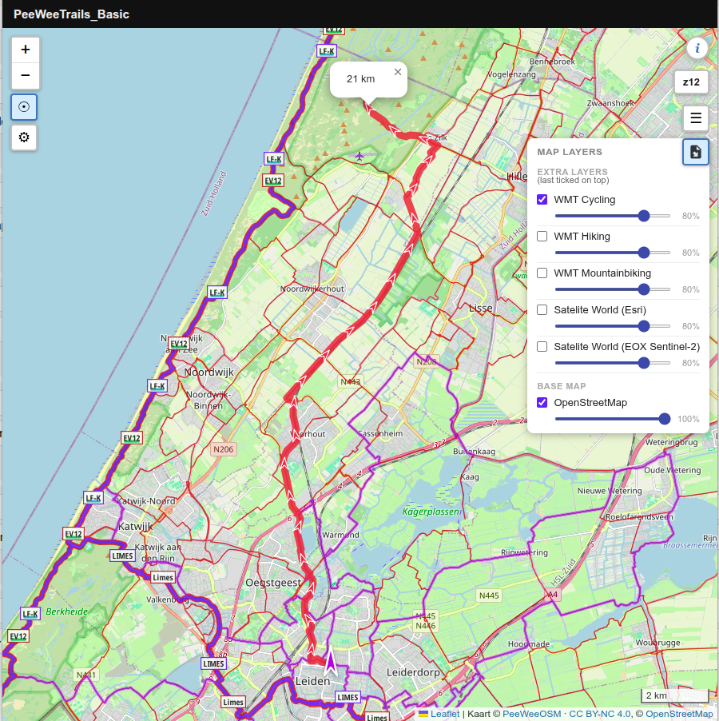
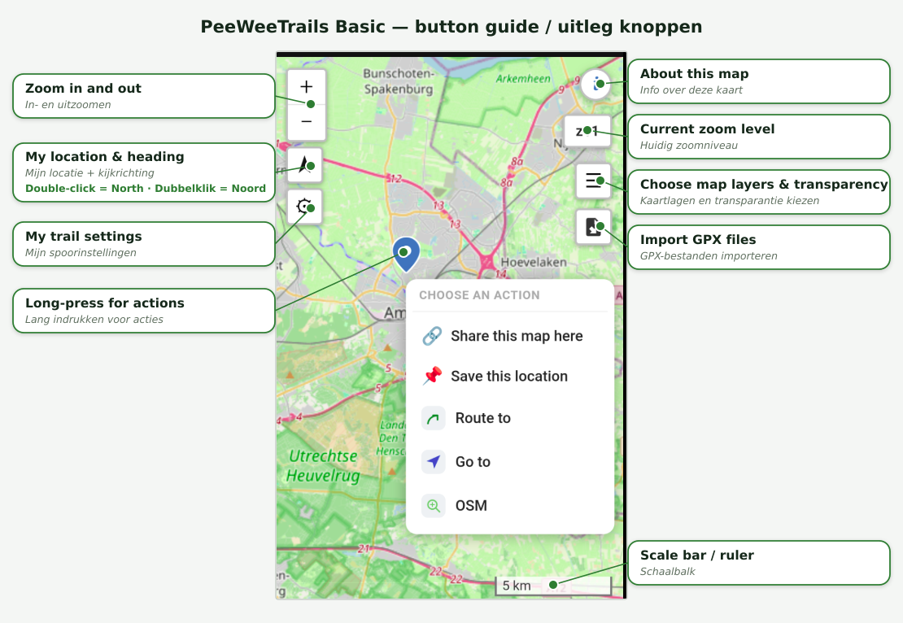

A simple map that runs entirely in your browser — plan a route, follow your location, bring your own files.
Een eenvoudige kaart die volledig in je browser draait — bereken een route, volg je locatie, neem je eigen bestanden mee.
Where most navigation and fitness apps quietly send your route data to a server somewhere, this one simply doesn't. Everything you see and do stays on the device you're holding.
Waar de meeste navigatie- en fitnessapps je routedata stilletjes naar een server sturen, doet deze dat gewoon niet. Alles wat je ziet en doet blijft op het apparaat in je hand.


Press and hold anywhere on the map, choose how you're travelling, and the app draws a route there for you to follow. Because routing uses OpenStreetMap data, it knows footpaths, cycleways and quiet lanes — not just the main roads.
Houd je vinger ergens op de kaart, kies hoe je reist, en de app tekent een route daarheen die je kunt volgen. Omdat de routering OpenStreetMap-data gebruikt, kent hij voetpaden, fietspaden en rustige weggetjes — niet alleen de hoofdwegen.
PeeWeeTrails_Basic uses OpenStreetMap as its default background, and can add worldwide satellite imagery as an extra layer.
No trackers or ads loading in the background when you open the map.
Want a Google or satellite view anyway? Switch it on with one tap — it's just never the starting point.
PeeWeeTrails_Basic gebruikt OpenStreetMap als standaard achtergrond, en kan wereldwijde satellietbeelden als extra laag toevoegen.
Geen trackers of advertenties die op de achtergrond meeladen wanneer je de kaart opent.
Toch een Google- of satellietweergave? Zet die met één tik aan — het is alleen nooit het startpunt.
Mark a parking spot, a starting point or a rest stop with a tap.Leg met een tik een parkeerplek, startpunt of rustplaats vast.
Open the map on your phone to see your current GPS position.Open de kaart op je telefoon om je actuele GPS-positie te zien.
The app builds up and shows the track you're actually walking or cycling, in real time.De app bouwt het spoor dat je aflegt realtime op en toont het terwijl je wandelt of fietst.
Switch official node networks and routes on or off as you need them.Schakel officiële knooppuntnetwerken en routes naar wens aan of uit.
Bring in your own GPX and GeoJSON files. The app splits them into separate layers — tracks, waypoints and polygons — and you can adjust the look and visibility of each one.
Neem je eigen GPX- en GeoJSON-bestanden mee. De app splitst ze op in aparte lagen — tracks, waypoints en polygonen — en je past van elk het uiterlijk en de zichtbaarheid aan.
Loaded a route and switched to another app for a moment? When you come back, your imported tracks and chosen map layers are still there. They're remembered in your own browser, so a reload — or your phone quietly closing the tab in the background — won't wipe your setup.
Route geladen en even naar een andere app gewisseld? Als je terugkomt, staan je geïmporteerde tracks en gekozen kaartlagen er nog. Ze worden in je eigen browser onthouden, zodat een herlaad — of je telefoon die het tabblad op de achtergrond sluit — je opzet niet wist.
| Aspect | Aspect | How PeeWeeTrails_Basic handles it | Hoe PeeWeeTrails_Basic dit regelt |
|---|---|---|---|
| Data storageDataopslag | Only in your own browser, on your own device. Your markers, routes and layer choices are remembered locally between visits — but nothing is ever written to a server. Clear your browser data and it's gone.Alleen in je eigen browser, op je eigen apparaat. Je markers, routes en laagkeuzes worden lokaal onthouden tussen bezoeken — maar er wordt nooit iets naar een server geschreven. Wis je browserdata en het is weg. | ||
| AccountsAccounts | None. No sign-up, no email address, nothing to register.Geen. Geen registratie, geen e-mailadres, niets aan te melden. | ||
| RoutingRoutering | Routes are calculated by an OpenStreetMap-based routing service (BRouter). Only your chosen start and destination points are sent to work out the route.Routes worden berekend door een OpenStreetMap-routeringsdienst (BRouter). Alleen je gekozen start- en eindpunt worden verstuurd om de route te bepalen. | ||
| Always up to dateAltijd actueel | Running straight from the browser means you always get the current version. That does mean a connection is needed to load it.Rechtstreeks vanuit de browser draaien betekent dat je altijd de laatste versie hebt. Daarvoor is wel een verbinding nodig. |